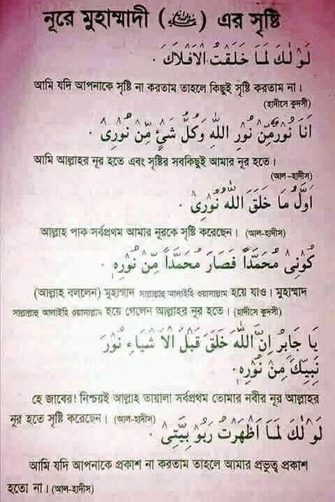
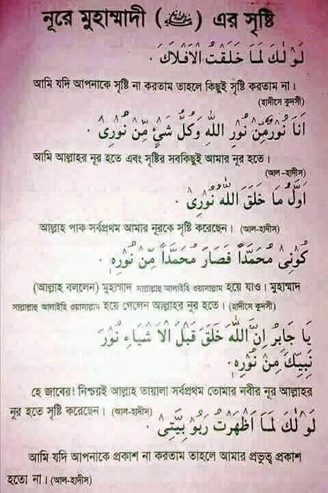

সত্যিই কি রাসূল (সাঃ)গরীব ছিলেন ?
#আসুন আমরা যেভাবে জেনে আসছি একটু স্বরন করি-
১/ হযরত নবী মোহাম্মদ (সাঃ)একটি জীর্ণ কুটিরে জন্মেছিলেন ।
২/তিনি নিতান্তই একজন গরীব ব্যক্তি ছিলেন ।
৩/তিনি অভাবের তাড়নায়,
না খেয়ে পেটে পাথর বাঁধতেন ।
৪/ মাত্র কয়েকটি খেজুরের আশায় ইহুদির বাগানে কুপ থেকে বালতি দিয়ে পানি তুলতেন।এমনকি রশি ছিরে যাওয়ায় বাগানের মালিক ইহুদী,
রাসূল (সাঃ)এর গালে নাকি থাপ্পরও মেরে ছিল ।
৫/ তিনি নাকি সত্তুর তালি জামা পড়তেন ।
৬/ আরো জানতাম নবীজি (সঃ)এর পিতা মাতা মুসলমানই ছিলেন না,তাদের জন্য দোয়া করা যাবে না ।
৭/ দয়াল রাসূল (সাঃ) ১২ই রবিউল আওয়াল সোমবার পৃথিবীতে আগমন করলেও আবার তিনি ১২ই রবিউল আওয়াল সোমবার দিন ওফাৎ লাভ করেছিলেন।
তাই এদিনটি উদযাপন করা যাবে না ।
৮/ শুভ জন্মদিন পবিত্র ঈদে মিলাদুন্নবী (সাঃ)পালন না করে সীরতুন্নবী অর্থাৎ জীবনী মোবারক পালন করা হতো.......
পাঠকের কাছে অনুরোধ একটু জ্ঞান দিয়ে চিন্তা করবেন-
মহান সংস্কারক সূফী সম্রাট হযরত দেওয়ানবাগী হুজুর কেবলাজান বলেন- 'হযরত মোহাম্মদ (সাঃ) কখনই গরীব ছিলেন না, তিনি ছিলেন ধনী। সর্বকালের সর্বযুগের সর্বশ্রেষ্ঠ মহামানব হযরত মোহাম্মদ (সাঃ)-এর দাদা হযরত আবদুল মুত্তালিব (আঃ) ছিলেন মক্কার শাসনকর্তা । তিনি ছিলেন মদিনার শাসন কর্তা, ।
দো-জাহানে বাদশাহ্ হযরত রাসূলে আকরাম (সাঃ) আরবের সবচেয়ে সম্ভ্রান্ত ও প্রভাব প্রতিপত্তিশালী কোরায়েশ বংশের হাশেমী গোত্রে পিতা হযরত আব্দুল্লাহ (আঃ) এর শাহী প্রাসাদে ও মাতা সায়্যিদা হযরত আমিনা (আঃ) উদরে জন্ম গ্রহন করেন। তিনার পিতা ছিলেন একজন আন্তর্জাতিক ব্যবসায়ী, ফলে তিনি শৈশবকালেই রাজপরিবারের লালিত-পালিত হন। তাঁর সম্মানিত পিতা হযরত আবদুল্লাহ (আঃ)ছিলেন আন্তর্জাতিক ব্যবসায়ী। পাশাপাশি হযরত রাসুল নিজেও ছিলেন মদীনার শাসনকর্তা, অর্থাৎ মদীনা'র ইসলামী জনকল্যাণমূলক রাষ্ট্রের প্রথম রাষ্ট্রপতি।‘মদীনার সনদ' নামে তিনিই এ রাষ্ট্রের সংবিধান প্রণয়ন করে সকলের জীবনে ইনশাফ কায়েম করে শান্তির সমাজ কায়েম করেন।
মহান আল্লাহর ইচ্ছা পর্যায়ক্রমে বিবাহ বন্দনে আবদ্ধ হয়েছিলেন আরবের শ্রেষ্ঠ ধনী রমনীদের মধ্যে একজন মা খাদিজাতুল কোবরা। এবং হযরত রাসুল (সঃ)-এর লঙ্গরখানায় প্রতিদিন সারে তিনশ' থেকে চারশ' লোক আহার করতেন। সুতরাং তিনি ধনী ছিলেন।
তাছাড়া মহান আল্লাহ্ কূল-কায়েনাতের রহমত হযরত মোহাম্মদ (সাঃ)-কে নজিরবিহীন সম্মান ও অতুলনীয় ধনসম্পদ দ্বারা তাঁকে শ্রেষ্ঠত্বের আসনে অধিষ্ঠিত করেন। মহিমান্বিত আল্লাহ নিজেই বলেন- ه ووجدت عالا فاعني অর্থাৎ : “হে রাসুল (সাঃ)! আমি আপনাকে অসহায় অবস্থায় পেয়েছি, অতঃপর আপনাকে সম্পদর্শনী করেছি।” (সূরা-আদ্ব দ্বুহা-৯৩ : আয়াত-৮) সুতরাং মহিমান্বিত আল্লাহ্ নিজে যে রাসুল (সাঃ)-কে সম্পদশালী করলেন, তিনি কি করে গরীব হতে পারেন?
উপরন্তু পরম করুণাময় আল্লাহ হযরত রাসুল (সাঃ)-কে এত বেশি সম্পদশালী করেন যে, তিনি তাঁর ধনভাণ্ডারের চাবিসমূহ তাঁর এ শ্রেষ্ঠ মাহবুবের হস্ত মোবারকে অর্পণ করেন। এ প্রসঙ্গে আল্লাহর রাসুল (সাঃ) নিজেই এরশাদ করেন- و بينا أنا نايم ريني أتيت بمفاتيح خزائن الأرض فوضعت ف অর্থাৎ “একদা আমি ঘুমিয়ে ছিলাম। আমাকে দেখানো হলো যে, পৃথিবীর সকল ধনভাণ্ডারের চাবিসমূহ আমার হাতে অর্পণ করা হয়েছে।" (বোখারী ও মুসলিম শরীফের সূত্রে মেশকাত শরীফ, পৃষ্ঠা-৫১২) ফলে আল্লাহর রাসুল (সাঃ) এত বেশি দান-সদকা করতেন যে, তাঁর মত এত বড় দানশীল আর কেউ ছিলো না। প্রকৃতপক্ষে হযরত রাসুল (সাঃ) ইহকাল ও পরকালের বাদশাহ।
আর তিনি সম্পদশালী ছিলেন বলেই তিনি যাকাত দিয়েছেন, হজ্জ করেছেন, বিদায় হজ্জে একশ' উট কোরবানি করেছেন।
মহান আল্লাহর হুকুমে তিনি ২৭টি যুদ্ধের গনি মতের এক পঞ্চমাংশ মালামালের মালিক হয়েছিলেন। আর যুদ্ধ পরিচালনার জন্য কোনো সাধারণ ব্যক্তি পক্ষে সম্ভব নয়।
.png "Jobber") 
